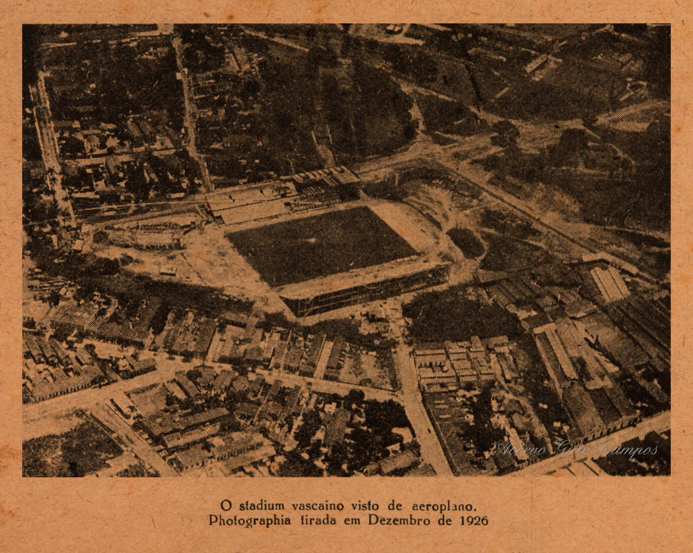

O Clube de Regatas Vasco da Gama, uma das mais tradicionais e importantes agremiações esportivas do Brasil, foi fundado em 21 de agosto de 1898, no Rio de Janeiro, por um grupo de jovens remadores entusiastas do esporte. Inspirados pelas conquistas marítimas do navegador português Vasco da Gama, os fundadores deram ao clube o nome do famoso explorador para simbolizar coragem e determinação.
Originalmente criado para promover a prática do remo, um esporte bastante popular na época, o Vasco da Gama rapidamente se destacou nas competições de regatas. O clube conquistou seu primeiro título importante em 1905, com a vitória no Campeonato Carioca de Remo, solidificando sua reputação no cenário esportivo.
Ao longo dos anos, o Vasco da Gama expandiu suas atividades para incluir outros esportes, sendo o futebol o mais notável. Em 1915, o clube formou seu primeiro time de futebol, e em 1923, ingressou na elite do futebol carioca. A partir daí, o Vasco da Gama passou a ser conhecido não apenas pelo remo, mas também por suas conquistas no futebol.
O clube tem uma rica história de inclusão e diversidade. Na década de 1920, o Vasco da Gama foi pioneiro na inclusão de jogadores negros e operários, desafiando o racismo e a elitização que prevaleciam no futebol brasileiro. Este compromisso com a inclusão social e a luta contra a discriminação se tornou um marco na história do clube.
Ao longo de sua trajetória, o Vasco da Gama acumulou inúmeros títulos e glórias, tanto no futebol quanto em outras modalidades esportivas. O clube também é conhecido por sua apaixonada torcida, que desempenha um papel fundamental no apoio e na construção de sua identidade.
Com um legado de vitórias, luta contra a discriminação e compromisso com a comunidade, o Vasco da Gama continua a ser uma força significativa no esporte brasileiro e um símbolo de perseverança e inclusão.
A Resposta Histórica
A "Resposta Histórica" do Vasco da Gama é um episódio marcante na história do futebol brasileiro, destacando o clube como um símbolo de inclusão e resistência contra a discriminação racial e social. Este evento ocorreu em 1924, quando a Associação Metropolitana de Esportes Atléticos (AMEA) exigiu que o Vasco excluísse 12 jogadores do seu elenco, alegando que eram "profissionais" em uma época em que o futebol deveria ser amador. Na verdade, a maioria desses jogadores eram negros e operários, o que evidenciava um claro viés elitista e racista por parte da AMEA.
O Vasco da Gama, em vez de ceder às pressões, respondeu com uma carta firme e digna, defendendo o direito de seus jogadores de todas as origens sociais e raciais de competir. O clube recusou a expulsar os jogadores e decidiu sair da AMEA, permanecendo fiel aos seus princípios de igualdade e inclusão. Este gesto não apenas solidificou a reputação do Vasco como um clube pioneiro na luta contra o racismo, mas também teve um impacto duradouro na democratização do futebol brasileiro, abrindo portas para jogadores de todas as classes sociais e raças.
A "Resposta Histórica" do Vasco da Gama é lembrada como um momento de coragem e compromisso com a justiça social, simbolizando a resistência contra a exclusão e a discriminação, e reforçando os valores de igualdade e inclusão que o clube continua a promover até hoje.
A construção de São Januário
A história da construção de São Januário é um capítulo notável na trajetória do Club de Regatas Vasco da Gama. Na década de 1920, após o episódio conhecido como "Resposta Histórica", o Vasco se destacou no futebol carioca, mas enfrentou dificuldades devido à falta de um estádio próprio para acomodar sua crescente torcida. Determinado a superar essa limitação, o clube decidiu construir seu próprio estádio.

A construção de São Januário começou em 6 de junho de 1926, em um terreno no bairro de São Cristóvão, no Rio de Janeiro. O projeto foi financiado majoritariamente pelos próprios sócios e simpatizantes do Vasco, refletindo o espírito de comunidade e união que caracteriza o clube. A campanha de arrecadação de fundos foi intensa, envolvendo doações de empresários portugueses e apoio popular, mostrando a forte conexão do clube com suas raízes e sua torcida.
O estádio foi inaugurado em 21 de abril de 1927, com uma grande festa que contou com a presença do então presidente da República, Washington Luís. São Januário, na época, era o maior estádio da América do Sul, com capacidade para cerca de 40 mil espectadores, e rapidamente se tornou um ícone do futebol brasileiro.
Além de servir como palco para jogos históricos e conquistas memoráveis do Vasco, São Januário desempenhou um papel importante em eventos sociais e políticos. Foi ali que, em 1940, o presidente Getúlio Vargas anunciou a Consolidação das Leis do Trabalho (CLT), reforçando a importância do estádio não apenas no esporte, mas também na história do Brasil.
Nossos Títulos
1934 – Campeão Carioca (LCF)
1936 – Campeão Carioca (FMD)
1940 – Campeão do Torneio Dr. Luiz Aranha (Rio de Janeiro)
1942 – Campeão do Torneio Início (FMF)
1944 – Campeão do Torneio Início
1944 – Campeão Invicto do Torneio Relâmpago
1944 – Campeão do Torneio Municipal
1945 – Campeão Carioca (FMF – Campeão Invicto de Terra e Mar)
1945 – Bicampeão do Torneio Início
1945 – Bicampeão Invicto do Torneio Municipal
1946 – Campeão do Torneio Relâmpago
1946 – Tricampeão do Torneio Municipal
1947 – Campeão Carioca (FMF – Campeão Invicto de Terra e Mar)
1947 – Tetracampeão do Torneio Municipal
1948 – Campeão Sul-Americano de Campeões (Invicto – Primeiro Campeão da América no ano do Cinquentenário do Clube – Reconhecido pela CONMEBOL)
1948 – Campeão do Torneio Início
1949 – Campeão Carioca (FMF – Campeão Invicto de Terra e Mar)
1950 – Bicampeão Carioca (FMF – Bicampeão de Terra e Mar)
1952 – Campeão Carioca (FMF – Campeão de Terra e Mar)
1953 – Campeão do Quadrangular Internacional do Rio
1953 – Campeão do Torneio Octogonal Rivadávia Corrêa Meyer
1953 – Campeão do Torneio Internacional do Chile (Santiago, Chile)
1956 – Campeão Carioca (FMF – Campeão de Terra e Mar)
1957 – Campeão do Torneio Santiago (Santiago, Chile)
1957 – Campeão do Torneio Quadrangular de Lima (Lima, Peru)
1957 – Primeiro Campeão do Torneio de Paris (Paris, França)
1957 – Campeão do Troféu Teresa Herrera (La Coruña, Espanha)
1958 – Super Campeão Carioca (FMF – Campeão de Terra e Mar)
1958 – Campeão do Torneio Rio-São Paulo
1958 – Campeão do Torneio Início
1963 – Campeão do Torneio Pentagonal do México (Cidade do México, México)
1965 – Primeiro Campeão da Taça Guanabara (FCF)
1965 – Campeão do Torneio Cinquentenário da Federação Pernambucana (Pernambuco)
1965 – Campeão do Torneio IV Centenário da Cidade do Rio de Janeiro
1966 – Campeão do Torneio Rio-São Paulo
1970 – Campeão Carioca (FCF – Campeão de Terra e Mar)
1972 – Campeão da Taça José de Albuquerque (Terceiro Turno do Campeonato Carioca)
1973 – Campeão do Troféu Pedro Novaes (Terceiro Turno, grupo A do Campeonato Carioca – Invicto)
1973 – Campeão do Torneio Erasmo Martins Pedro (Rio de Janeiro)
1974 – Campeão Brasileiro
1974 – Campeão da Taça Oscar Wright da Silva (Segundo Turno do Campeonato Carioca – Invicto)
1975 – Campeão da Taça Danilo Leal Carneiro (Terceiro Turno do Campeonato Carioca)
1976 – Campeão da Taça Guanabara
1977 – Campeão Carioca (FCF)
1977 – Bicampeão da Taça Guanabara
1977 – Campeão do Torneio Imprensa de Santa Catarina
1977 – Campeão da Taça Manoel do Nascimento Vargas Netto (Segundo Turno do Campeonato Carioca – Invicto)
1979 – Campeão do Troféu Cidade de Sevilha (Sevilha, Espanha)
1979 – Campeão do Troféu Cidade de Elche (Elche, Espanha)
1980 – Campeão do Torneio José Fernandes (Amazonas)
1980 – Campeão do Troféu Colombino (Huelva, Espanha)
1980 – Campeão da Taça Gustavo de Carvalho (FFERJ – 2º Turno do Campeonato Estadual)
1981 – Campeão do Torneio João Havelange (Minas Gerais)
1981 – Campeão do Torneio Ilha de Funchal (Funchal, Portugal)
1981 – Campeão da Taça Ney Cidade Palmeiro (Segundo Turno do Campeonato Estadual – Invicto)
1982 – Campeão Estadual (FFERJ – Campeão de Terra e Mar)
1982 – Campeão do Torneio João Castelo (Maranhão)
1982 – Campeão do Torneio de Verão (Montevidéu, Uruguai)
1984 – Campeão da Taça Rio
1986 – Campeão da Taça Guanabara
1986 – Campeão da Taça Cidade de Juiz de Fora (Minas Gerais)
1987 – Campeão Estadual (FFERJ)
1987 – Bicampeão da Taça Guanabara
1987 – Bicampeão da Taça Cidade de Juiz de Fora (Minas Gerais)
1987 – Campeão da Copa de Ouro (Los Angeles, Estados Unidos)
1987 – Campeão da Copa TAP (Newark, Estados Unidos)
1987 – Campeão do Torneio Ramón de Carranza (Cádiz, Espanha)
1988 – Bicampeão Estadual (FFERJ)
1988 – Campeão da Taça Rio
1988 – Campeão da Taça Brigadeiro Jerônimo Bastos (Terceiro Turno do Estadual – Invicto)
1988 – Bicampeão do Torneio Ramón de Carranza (Cádiz, Espanha)
1989 – Bicampeão Brasileiro
1989 – Campeão do Torneio de Metz (Metz, França)
1989 – Tricampeão do Torneio Ramón de Carranza (Cádiz, Espanha)
1990 – Campeão da Taça Guanabara (Invicto)
1990 – Campeão da Taça Adolpho Bloch (Rio de Janeiro)
1991 – Campeão do Torneio da Amizade (Libreville, Gabão)
1992 – Campeão Estadual (FFERJ – Invicto)
1992 – Campeão da Taça Guanabara
1992 – Campeão da Taça Rio
1992 – Campeão da Copa Rio de Janeiro (Invicto)
1993 – Bicampeão Estadual (FFERJ)
1993 – Bicampeão da Taça Rio
1993 – Bicampeão da Copa Rio de Janeiro
1993 – Campeão do Torneio João Havelange (RJ-SP)
1993 – Campeão do Troféu Cidade de Barcelona (Barcelona, Espanha)
1993 – Campeão do Troféu Cidade de Zaragoza (Zaragoza, Espanha)
1994 – Tricampeão Estadual (FFERJ)
1994 – Campeão da Taça Guanabara (Invicto)
1995 – Campeão do Torneio Palma de Mallorca (Mallorca, Espanha)
1997 – Tricampeão Brasileiro
1997 – Campeão do Troféu Bortolotti (Bérgamo, Itália)
1997 – 3º Turno do Estadual (FFERJ)
1998 – Campeão da Taça Libertadores da América (Bicampeão da América no ano do Centenário do Clube)
1998 – Campeão Estadual (FFERJ – Campeão de Terra e Mar no ano do centenário do clube)
1998 – Campeão da Taça Guanabara
1998 – Campeão da Taça Rio
1999 – Campeão do Torneio Rio-São Paulo
1999 – Campeão da Taça Rio (Invicto)
2000 – Campeão da Copa Mercosul (Título de nível Sul-Americano)
2000 – Tetracampeão Brasileiro
2000 – Campeão da Taça Guanabara (Invicto)
2001 – Campeão da Taça Rio (Invicto)
2003 – Campeão da Taça Guanabara
2003 – Campeão da Taça Rio (Invicto)
2003 – Campeão Estadual (FFERJ)
2004 – Campeão da Taça Rio
2009 – Campeão Brasileiro da Série B
2010 – Campeão da Copa da Hora
2011 – Campeão da Copa do Brasil
2015 – Campeão Estadual (FFERJ – Campeão no ano do Centenário do Futebol no Clube)


/i.s3.glbimg.com/v1/AUTH_bc8228b6673f488aa253bbcb03c80ec5/internal_photos/bs/2021/S/t/XvNTfhSs2iybSn1CUNoQ/josedoamaralosorio.jpg)